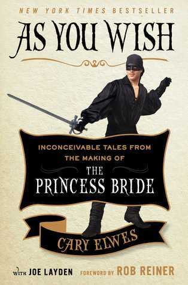

"As You Wish: Inconceivable Tales from the Making of The Princess Bride"
- Read on 2019-08-12
- Rating: ️️️️️
- Format: 🎧 (7 hours 1 minute)
An entertaining view into the making of The Princess Bride, largely from the point of view of Cary Elwes (Wesley), but with nearly every named character contributing. If you listen to the audio book, most of the parts are also read by the various contributors/actors themselves. If you enjoy the movie, you'll likely enjoy this book.
- Prior: When Breath Becomes Air
- Next: The Gunslinger